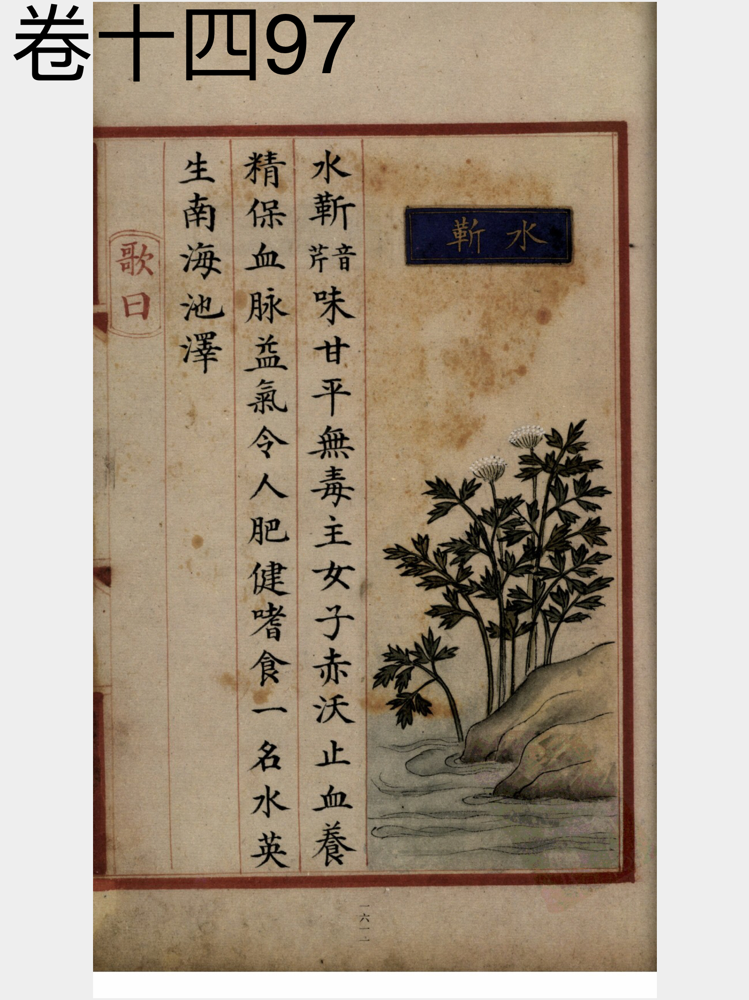
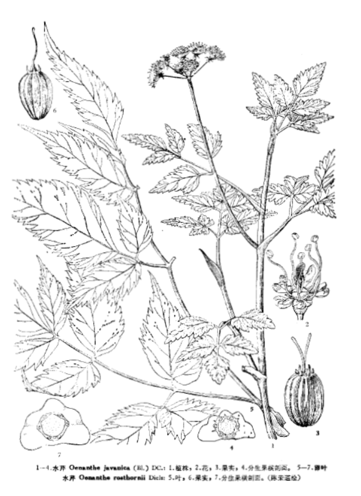

出现篇目
别名 芹菜（《别录》）、水英（《本经》）、楚葵、水斳。
古代记载 《毛诗故训传》
芹，菜也，可以为菹，亦所用待君子也。（《毛传》注《采菽》）
《毛诗正义》
芹、水草、可食。（《毛诗正义》疏《采菽》）
芹、水菜也。（《毛诗正义》疏《泮水》）
《本草纲目》
别录曰∶水斳生南海池泽。 恭曰∶水斳即芹菜也。有两种∶荻芹白色取根，赤芹取茎、叶。并堪作菹及生菜。 保升曰∶芹生水中，叶似芎䓖，其花白色而无实，根亦白色。 诜曰∶水芹生黑滑地，食之不如高田者宜人，置酒酱中香美。高田者名白芹。余田者皆有虫子在叶间，视之不见，食之令人为患。 弘景曰∶又有渣芹，可为生菜，亦可生啖。 时珍曰∶芹有水芹、旱芹。水芹，生江湖陂泽之涯；旱芹生平地，有赤、白二种。二月生苗，其叶对节而生，似芎䓖。其茎有节棱而中空，其气芬芳。五月开细白花，如蛇床花。 楚人采以济饥，其利不小。《诗》云∶ 沸槛泉，言采其芹。杜甫诗云∶饭煮青泥坊底芹。 又云∶香芹碧涧羹。皆美芹之功。而列子言乡豪尝芹，蜇口惨腹，盖未得食芹之法耳。
当代记载 《中国植物志》
水芹 （Oenanthe javanica），伞形科，水芹属植物。多年生草本，茎直立或基部匍匐。花瓣白色。果实近于四角状椭圆形或筒状长圆形。花期6-7月，果期8-9月。
产我国各地。多生于浅水低洼地方或池沼、水沟旁。农舍附近常见栽培。分布于印度、缅甸、越南、马来西亚、印度尼西亚的爪哇及菲律宾等地。

<补遗雷公炮制便览>

<中国植物志>